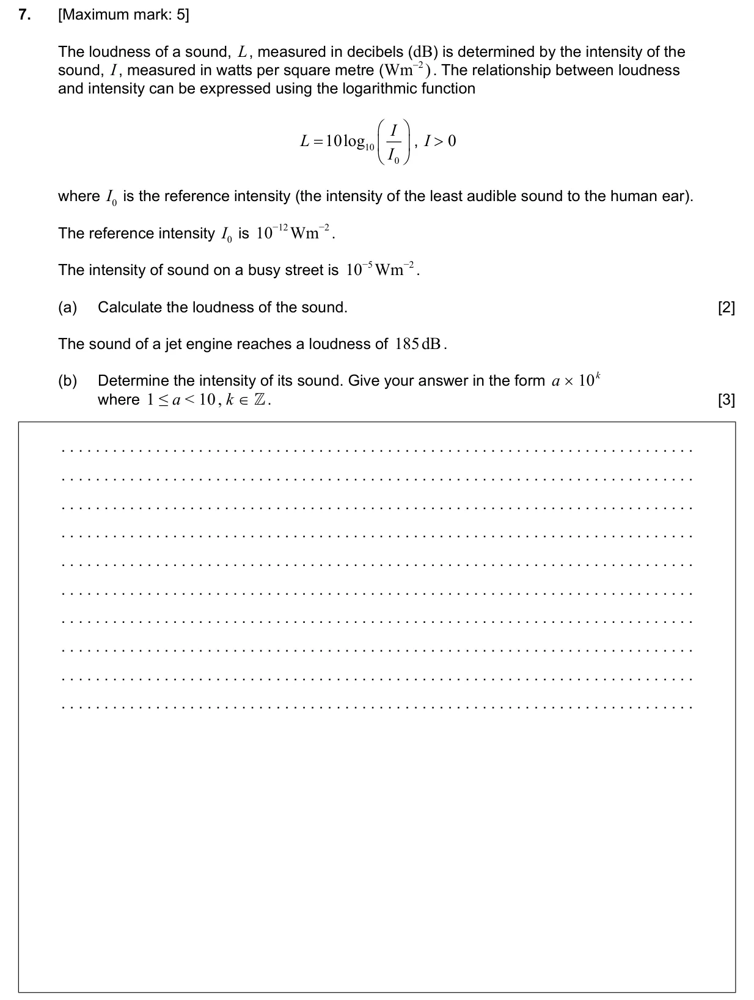
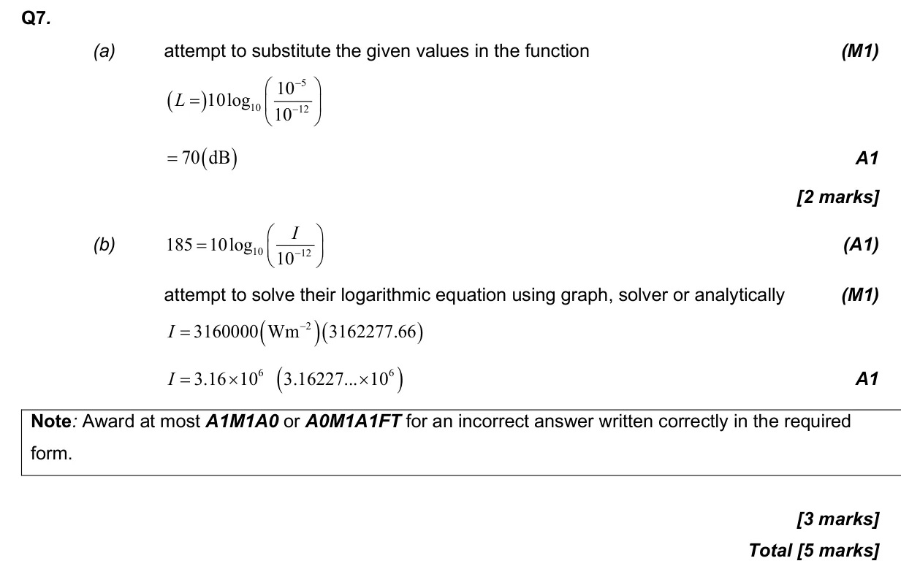

5 marks P1 TZ3 Calculator Appears in AI SL P1 Q7AI HL P1 Q2 1.5 Laws of exponents with integer exponents and introduction to logarithms1.1 Scientific notation Question Hide breakdown ab Markscheme 